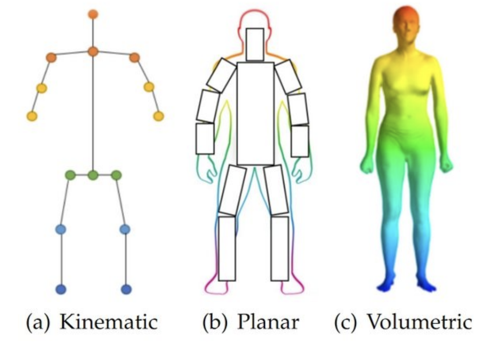
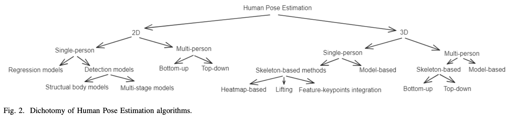

19 Human Pose Estimation
19.1 Problem Formulation
Human Pose Estimation (HPE) predicts the locations of anatomical keypoints (joints) of the human body from image or video input.
Body representation: - Skeleton: \(K\) keypoints \(\{\mathbf{j}_k\}_{k=1}^K\) with \(K=17\) (COCO), connected by predefined limb pairs. - Parametric body model (3D only): SMPL encodes the full body surface \(M(\boldsymbol{\theta}, \boldsymbol{\beta}) \in \mathbb{R}^{6890 \times 3}\) via pose parameters \(\boldsymbol{\theta} \in \mathbb{R}^{72}\) (24 joints × 3 axis-angle) and shape coefficients \(\boldsymbol{\beta} \in \mathbb{R}^{10}\) (PCA of body shape).

Task taxonomy:
| Dimension | Setting | Notes |
|---|---|---|
| 2D | Single person | High accuracy; requires person crop |
| 2D | Multi-person | Top-down or bottom-up |
| 3D | Monocular | Depth ambiguous; needs prior or temporal |
| 3D | Multi-camera | Well-posed via triangulation |

Heatmap-based output: Rather than regressing joint coordinates directly, modern 2D models predict a Gaussian heatmap per joint: \(\mathbf{H}_k \in \mathbb{R}^{H' \times W'}\), a spatial probability map with a Gaussian blob centered at the ground-truth location. Heatmaps are more amenable to gradient flow and preserve spatial precision better than direct regression.
19.2 2D Human Pose Estimation
19.2.1 OpenPose (Cao et al., 2017) — Bottom-Up
Bottom-up methods detect all joints in the image first, then associate them into individuals.
OpenPose simultaneously predicts: - Confidence maps \(\mathbf{S} \in \mathbb{R}^{H'\times W'\times K}\): one heatmap per joint type. - Part Affinity Fields (PAFs) \(\mathbf{L} \in \mathbb{R}^{H'\times W'\times 2C}\): a 2D unit-vector field for each of \(C\) limb types, encoding the direction from one joint to another along each limb.
Association: candidate joint detections (peaks in \(\mathbf{S}\)) are connected into full-body skeletons by line-integral matching along PAF directions. Each person’s skeleton is assembled by solving a bipartite matching per limb type using the PAF integral as the affinity score.
Advantage: runs in \(O(1)\) w.r.t. number of people (one forward pass regardless of crowd size). Disadvantage: association is a heuristic; accuracy degrades in very crowded scenes.
19.2.2 HRNet (Wang et al., 2019) — Top-Down, High-Resolution
Top-down methods first detect person bounding boxes, crop each person, and run a pose estimator on the crop.
HRNet’s key innovation is maintaining high-resolution feature representations throughout the network, rather than bottlenecking to a low-resolution representation and upsampling.
Architecture: four parallel subnetworks at resolutions \(\{1, 1/2, 1/4, 1/8\}\) of the crop. At each stage, all branches exchange information via multi-scale fusion (bilinear upsampling / strided convolution). The high-resolution branch is never interrupted, preserving fine spatial detail for precise keypoint localization.
Output: heatmaps decoded from the high-resolution branch; keypoint coordinates are the argmax of each heatmap.
HRNet achieves state-of-the-art 2D HPE on COCO and is the standard backbone for many downstream applications (tracking, video pose).
19.2.3 ViTPose (Xu et al., 2022) — Transformer-Based
ViTPose applies a plain ViT backbone to the pose estimation crop — no task-specific architectural modifications — followed by a simple decoder (two deconvolution layers + a \(1\times 1\) conv) that produces \(K\) heatmaps.
Key findings: - A vanilla ViT is competitive with specialized architectures when pre-trained at scale (MAE pre-training on ImageNet). - The simple decoder suffices; complex decoders do not help significantly. - ViTPose scales predictably: larger ViT → higher AP.
Interview Insight: “Top-down or bottom-up for real-time multi-person pose?” Bottom-up (OpenPose) is preferred when the number of people is high or unknown, since computational cost is fixed. Top-down (HRNet, ViTPose) achieves higher per-person accuracy but scales linearly with person count — fine when a detector already provides bounding boxes.
19.3 3D Human Pose Estimation
19.3.1 Lifting from 2D Detections
The simplest 3D HPE pipeline runs a 2D detector first, then lifts the 2D joint coordinates to 3D.
VideoPose3D (Pavllo et al., 2019): temporal dilated convolutions over a window of \(T\) consecutive 2D pose detections predict the 3D joint positions for the center frame: \[\{(x_k, y_k, z_k)\}_{k=1}^K = f_\theta\!\left(\{(u_k^t, v_k^t)\}_{k=1,\,t=1}^{K,\,T}\right)\]
Temporal context resolves depth ambiguity: the same 2D pose is consistent with many 3D configurations, but motion dynamics constrain the plausible 3D trajectory.
Advantages: decoupled from the image encoder; benefits from state-of-the-art 2D detectors directly. Disadvantage: errors in 2D detection propagate; does not use appearance information for depth.
19.3.2 Model-Based: SMPL Regression
Model-based methods predict SMPL parameters \((\boldsymbol{\theta}, \boldsymbol{\beta})\) directly from the image, recovering both 3D joint positions and the full body surface mesh.
HMR (Human Mesh Recovery, Kanazawa et al., 2018): - ResNet-50 image encoder → iterative regression head that predicts \((\boldsymbol{\theta}, \boldsymbol{\beta}, \mathbf{c})\) where \(\mathbf{c} \in \mathbb{R}^3\) is the weak-perspective camera. - Adversarial prior: a discriminator is trained on SMPL parameter distributions from motion capture data, penalizing anatomically implausible poses.
4D-Humans (Goel et al., 2023): ViT-based encoder fine-tuned with HMR2.0 training recipe, achieving strong 3D mesh recovery in-the-wild.
Advantages of model-based methods: outputs are anatomically constrained (no impossible joint angles), compatible with physics simulation and animation pipelines, and provide dense surface output beyond 17 keypoints.
19.4 Evaluation Metrics
2D Pose Estimation:
PCK@\(\alpha\) (Percentage of Correct Keypoints): fraction of predicted joints within \(\alpha \cdot s\) pixels of the ground truth, where \(s\) is a body-part normalizer (head size, torso diameter): \[\text{PCK}@\alpha = \frac{1}{KN}\sum_{k=1}^K\sum_{n=1}^N \mathbb{1}\!\left[\left\|\hat{\mathbf{j}}_k^n - \mathbf{j}_k^n\right\|_2 < \alpha\cdot s_n\right]\]
OKS (Object Keypoint Similarity): IoU analogue for keypoints, with per-joint Gaussian weighting by visibility \(v_k\) and object scale \(s\): \[\text{OKS} = \frac{\displaystyle\sum_{k=1}^K \exp\!\left(-d_k^2 / 2s^2\sigma_k^2\right)\cdot\mathbb{1}[v_k > 0]}{\displaystyle\sum_{k=1}^K \mathbb{1}[v_k > 0]}\] where \(d_k = \|\hat{\mathbf{j}}_k - \mathbf{j}_k\|_2\) and \(\sigma_k\) is a per-joint constant reflecting annotation uncertainty (smaller for precise joints like wrists, larger for hips).
mAP@OKS: mean AP computed by varying the OKS threshold from 0.50 to 0.95 in steps of 0.05 and averaging. Standard COCO metric.
3D Pose Estimation:
MPJPE (Mean Per-Joint Position Error): average Euclidean distance in mm between predicted and ground-truth 3D joint positions: \[\text{MPJPE} = \frac{1}{K}\sum_{k=1}^K \left\|\hat{\mathbf{j}}_k - \mathbf{j}_k\right\|_2\] Evaluated on Human3.6M (indoor, controlled) and 3DPW (in-the-wild).
PA-MPJPE (Procrustes-Aligned MPJPE): MPJPE after optimal rigid alignment (rotation, translation, scale) of the predicted skeleton to the ground truth. Removes global pose error; measures shape and relative joint placement only.
Interview Insight: “What’s the difference between MPJPE and PA-MPJPE?” MPJPE measures absolute 3D error including global rotation; PA-MPJPE measures only the error after aligning global orientation. A method can have low PA-MPJPE (correct body shape/posture) but high MPJPE (wrong global orientation from monocular ambiguity). Both matter depending on the application.
19.5 Interview Questions
Q: In 3D HPE, what is the depth ambiguity and how do modern methods address it?
A single 2D projection is consistent with infinitely many 3D configurations (any point along the camera ray projects to the same image location). Modern methods address this through: (1) temporal context (VideoPose3D uses a sequence of frames — motion dynamics constrain depth); (2) parametric body models (SMPL regression constrains the output to anatomically plausible configurations); (3) multi-view setups (depth is uniquely determined by triangulation from two or more calibrated cameras).
Q: When would you use top-down vs. bottom-up HPE?
Bottom-up (OpenPose) runs in fixed time regardless of crowd density — preferred for real-time applications with many people (surveillance, sports broadcast). Top-down (HRNet, ViTPose) runs a dedicated estimator per detected person, achieving higher per-person accuracy but scaling linearly with crowd size — preferred when a person detector is already available and accuracy is the priority (film production, medical motion capture).
Q: Why are heatmaps preferred over direct coordinate regression for 2D pose?
Direct regression collapses the spatial distribution to a single point and loses the ambiguity structure — two plausible locations cannot be expressed as a single output. Heatmaps preserve this multimodality, provide a differentiable spatial supervision signal, and allow soft localization (subpixel via the Gaussian blob center). The argmax at inference recovers the coordinate with better precision than regression can achieve at the same output resolution.
Q: What does the SMPL body model give you that a skeleton-only representation does not?
SMPL outputs a full triangulated mesh of 6890 vertices, giving: a dense surface for physics simulation, contact detection, and cloth fitting; anatomically constrained pose (implausible joint configurations are never produced); and a compact shape space (\(\boldsymbol{\beta} \in \mathbb{R}^{10}\)) that encodes height, weight, and body proportions. Skeleton-only representations give 17–25 joint locations with no surface, no shape, and no anatomical constraints.